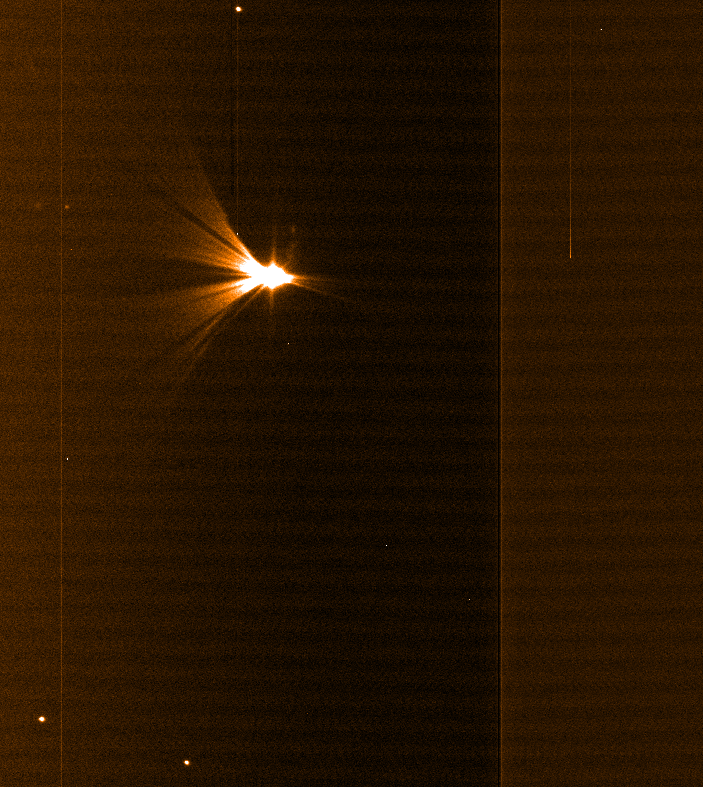

A strange object at the NTT
On Sep.30, 2003, Monica Castillo and myself were observing with the
3.6m New Technology at La Silla, we obtained this really strange
star. As one can see from the other (fainter) stars in the image,
there is nothing really wrong with the mirrors or the telescope.

It turned out that Monica was performing some adjustments that
required to have a moveable mirror partially in the beam of the
telescope, and that I started the exposure a little too early. The
result is that a bright star was just illuminating the edge of the
moveable mirror, causing the UFO.
|
UFO page
|
O.H.'s page
|
IfA Home Page
|
ESO homepage
|
2003-09-30T04:24:21 Tue